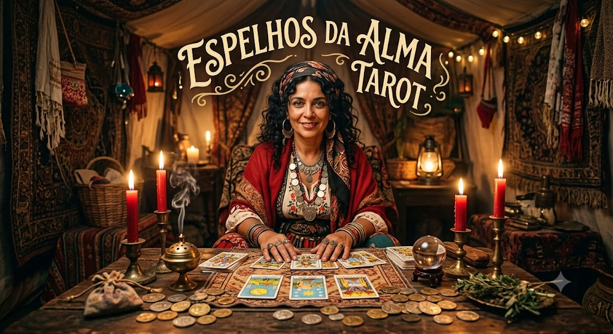

Meu primeiro post
Sejam bem vindos ao site Espelhos da alma tarot. Aqui irei mostrar que a tarologia não é tão dificel quanto parece.
Por: Stephany Kauana
Venha aprender mais sobre o miticismo e a tarologia.

Sejam bem vindos ao site Espelhos da alma tarot. Aqui irei mostrar que a tarologia não é tão dificel quanto parece.
Por: Stephany Kauana